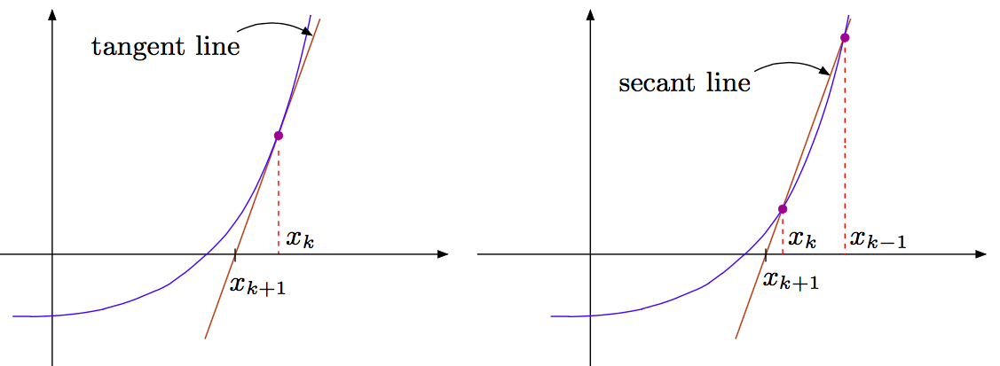

5.6. The Secant Method¶
The secant method is yet another iterative technique for solving nonlinear equations; it closely mimics Newton’s method, but relaxes the requirement that an analytic expression for the derivative \(f'(x)\) must be provided. It operates as follows:
We bootstrap the iteration not only with one initial guess \((x_0)\), but also with a second improved approximation \(x_1\).
At the \(k\)-th step of the iteration, we first approximate
\[f'(x_k)\approx\frac{f(x_k)-f(x_{k-1})}{x_k-x_{k-1}}\]Remember that since
\[f'(x_k)=\lim_{y\rightarrow x_k}\frac{f(x_k)-f(y)}{x_k-y}\]as the iterates \(x_{k-1}\), \(x_k\) get closer to one another (while they both approach the solution) this approximation becomes more and more accurate. We then replace this particular approximation for \(f'(x_k)\) in Newton’s method \(x_{k+1}=x_k-f(x_k)/f'(x_k)\) to obtain:
\[x_{k+1}=x_k-\frac{f(x_k)}{\frac{f(x_k)-f(x_{k-1})}{x_k-x_{k-1}}}\]
Geometrically, Newton’s method approximates \(f(x)\) at each step by the tangent line to the graph of \(f(x)\), while the method we just described approximates \(f\) by the secant line as illustrated below:
{kind=link}
We can show that, once we are “close enough” to the solution, the error \(e_k\) for the secant method satisfies
Thus, the secant method provides superlinear convergence. In practice, it may need a few more iterations (about \(50\%\) more?) than Newton’s method, but we need to weigh in the fact that each iteration is likely cheaper, since no derivatives of \(f\) need to be evaluated.
Order of convergence: Let the exact solution be \(a\), i.e., \(f(a)=0\). Define \(e_k=x_k-a\) and \(f_k=f(x_k)\). Then,
Expanding \(f(a+e_k)\) using Taylor’s series gives
We want to find \(\alpha\) such that \(|e_{k+1}|=C|e_k|^\alpha\). Since the first term in equation (1) dominates the error, we ignore the cubic term and solve
Canceling \(e_k\) from both sides and changing \(k\) to \(k+1\) gives \(|e_{k+1}|^{\alpha-1}=D|e_k|\), where \(D=|f''(a)/(2Cf'(a))|\). Raising both sides by the power \(\alpha\) gives
Equating equations (2) and (3) gives, \(C=D^\alpha\) and \(\alpha (\alpha-1)=1\). The negative solution can be discarded because we know that the order of convergence is positive. Thus, the order of convergence is \(\alpha=(1+\sqrt{5})/2\approx1.618\).